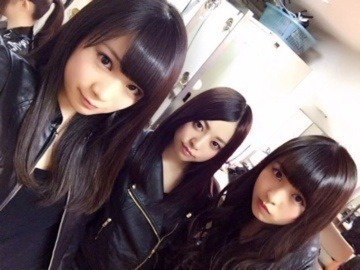
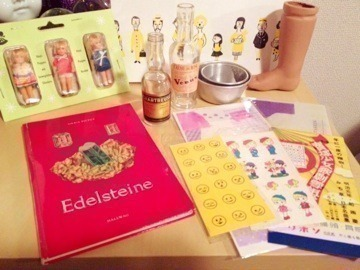

| 2013/11 10 Sun | 屋上で倒れたのは誰 。516回目 |
劇場版BAD BOYS J
ー最後に守るものー
ついに全国上映されました！
乃木坂46として
銀幕デビューの作品になります。
どきどき。
ぜひ観てください！
よろしくお願いします！

ナイツレディーーーース！
昨日は
ナタリーさんの撮影がありました！
バック8企画第二弾です。
また撮影できたと思うと嬉しいなあ
動き回ったり遊んだり楽しかった！
夕食にカルボナーラを
一気に食べてしまって
撮影時、胃がもたれてしまい、
お腹を押さえながら
今、ここ(胃)にカルボナーラが！
カルボナーラがぁあああ
このカルボナーラめ！
消化はまだか！カルボナーラ！
と言ってたので
カメラマンの方に
カルボナーラさんって言われました。
カルボナーラの威力凄まじい。
今日はオフだったので
東京蚤の市に行きました。

購入品。
ドールの脚どうしようか迷ってる。
雑貨だいすきな私にとっては
夢の国のようでした
ダークチェリーチョコレート
チーズケーキなんちゃらっていう
おしゃれなスイーツ食べました。

ほそぶちのめ が ね
寒い季節になると
もさいねって言われる。
大きくて分厚いニット
着てるからかな。
明日は収録。
来週は歌収録たくさんで忙しいけど
頑張ります！
まりか
コメント(346)
2013/11/10 21:42